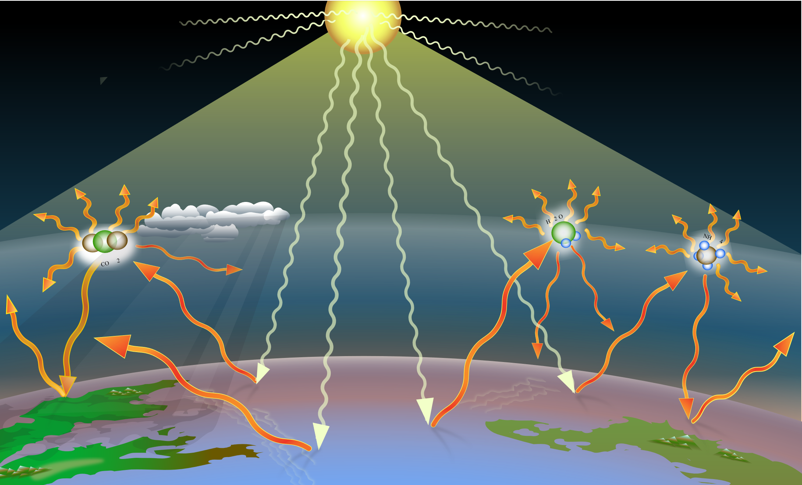
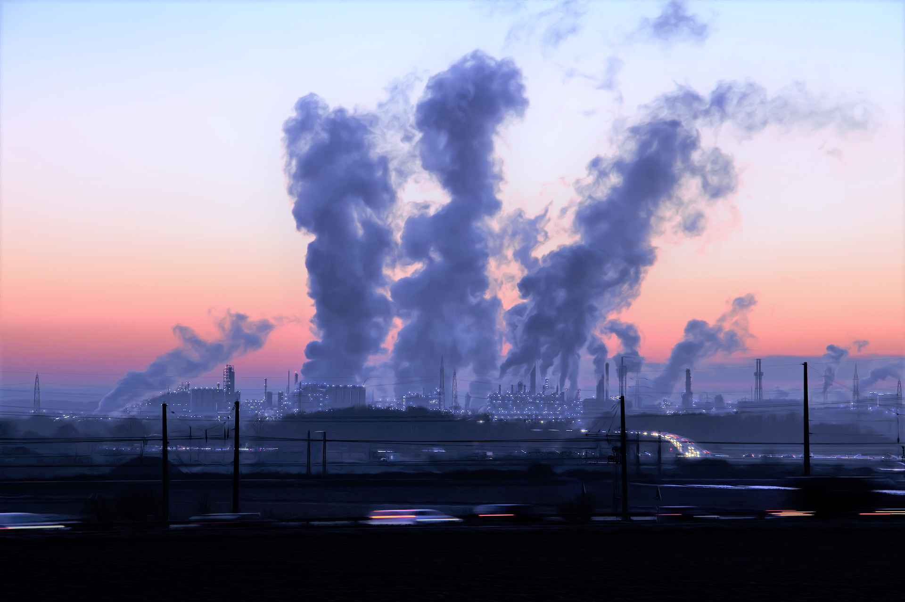

Je m'explique :
La température moyenne à la surface de la planète est le résultat d'un équilibre entre l'énergie reçue et réémise. La Terre reçoit de l'énergie solaire sous la forme de
rayons de soleil visibles à l'oeil nu et des quelques
rayons UV qui ont traversé la couche d'ozone et qui détruisent malheureusement notre ADN, créant parfois des cancers. Cette énergie solaire est absorbée par la surface terrestre qui se réchauffe. Mais elle émet en retour d'autres rayons d'énergie afin de se refroidir : ce sont les
rayons thermiques, ou infrarouges. Si la surface reçoit autant d'énergie solaire qu'elle émet d'énergie thermique vers l'atmosphère, elle est à l'équilibre : sa température moyenne reste constante. Mais aujourd'hui, ce n'est plus le cas ! Et la Terre se réchauffe.

L'effet de serre. Credit : A loose necktie
Notre atmosphère est composée de gaz et d'aerosols, c'est à dire de petites particules en suspension telles que les embruns ou la poussière du Sahara. Cette matière absorbe une partie de l'énergie thermique émise par la Terre et l'empêche de s'échapper vers l'espace. Le gaz et les particules absorbent la chaleur et finissent par la relacher sous forme de rayons infrarouges. Le problème, c'est que ces rayons sont en partie redirigés vers la surface, qui les reçoit en plus des rayons solaires !
C'est ce qu'on appelle l'effet de serre : la matière atmosphérique absorbe une partie du rayonnement émis par la surface et la lui renvoie, si bien qu'elle est dépassée par toute cette énergie et finit par se réchauffer.
Il existe un
effet de serre naturel sur Terre. La vapeur d'eau, le CO2, et toute la matière contenue dans l'atmosphère ont permis d'augmenter la température moyenne à la surface de notre planète. Grâce à l'atmosphère, elle est de 15°C, et non -18°C, la température attendue sur Terre au vu de sa proximité avec le Soleil. Grâce à l'effet de serre, l'eau liquide existe sur Terre. Et sans eau liquide, pas de vie ! On peut donc remercier notre atmosphère.
Cependant,
l'effet de serre n'a cessé d'augmenté depuis la révolution industrielle. Les populations humaines rejettent des gaz et d'autres polluants dans l'atmosphère - en excès !
Ces émissions anthropiques absorbent et renvoient beaucoup trop d'énergie thermique, si bien que le climat terrestre se réchauffe. Le principal coupable est le
dioxyde de carbone (CO2), libéré lors de la combustion d'énergie fossiles pour le transport et le chauffage, ou lorsque l'on brûle une forêt pour cultiver riz ou palmiers... Mais il y a aussi le
méthane (CH4), une molécule produite dans les zones humides, telles les rizières, et dans les décharges en plein air. Le méthane est également rejeté par les vaches, qui rotent lors de la digestion. Et l'exploitation du gaz naturel émet elle aussi du méthane. Une fois dans l'atmosphère, ce gaz chauffe la surface vingt fois plus efficacement que le CO2, mais il y reste heureusement moins longtemps.

Il existe de nombreux autres gaz à effet de serre : le protoxyde d’azote (N2O) qui compose les engrais chimiques dispersés dans les champs,
les halocarbures rejetés par l'industrie...
Des particules plus grosses peuvent aussi produire de l'effet de serre, tel le "carbone suie" issu des pots d'échappements.
Une partie de ces émissions est absorbée par l'océan, qui pompe un peu de CO2. Ou par la biomasse, telles les nouvelles forêts qui consomment elles aussi une part du CO2 que nous émettons. Mais
les émissions en excès résident dans l'atmosphère. Elles s'accumulent et réchauffent déjà notre planète.
L'un des défis scientifiques actuels est donc de
prévoir l'effet de serre associé à chaque gaz ou particules que nous émettons et d'estimer ces émissions, afin de prédire l'élévation des températures à venir.
Cette hausse des températures assèche la Terre, crée des déserts, fond la banquise et les glaciers... Les paysages changent et le climat se dérègle, si bien que les températures montent encore plus vite.
Vous connaissez à présent l'effet de serre. Mais ce n'est pas le seul acteur du climat ! Saviez-vous que la proportion de sable, de glace, ou encore de forêt à la surface de notre planète joue elle aussi un rôle clé sur ses températures ?